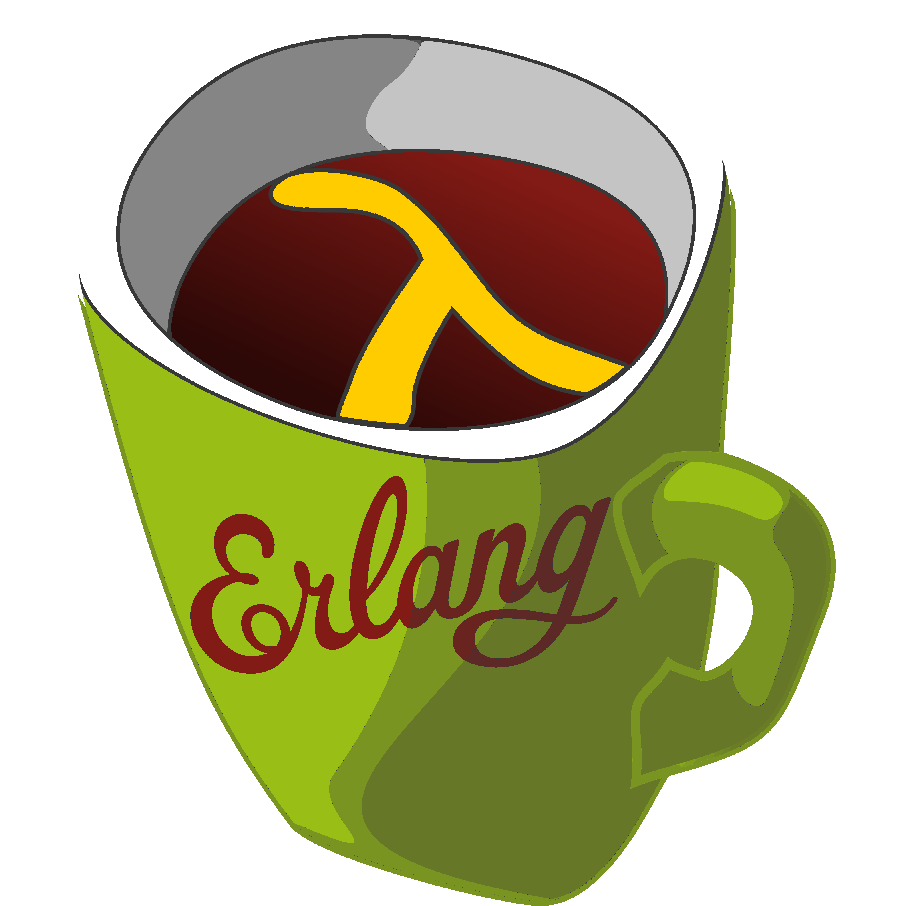
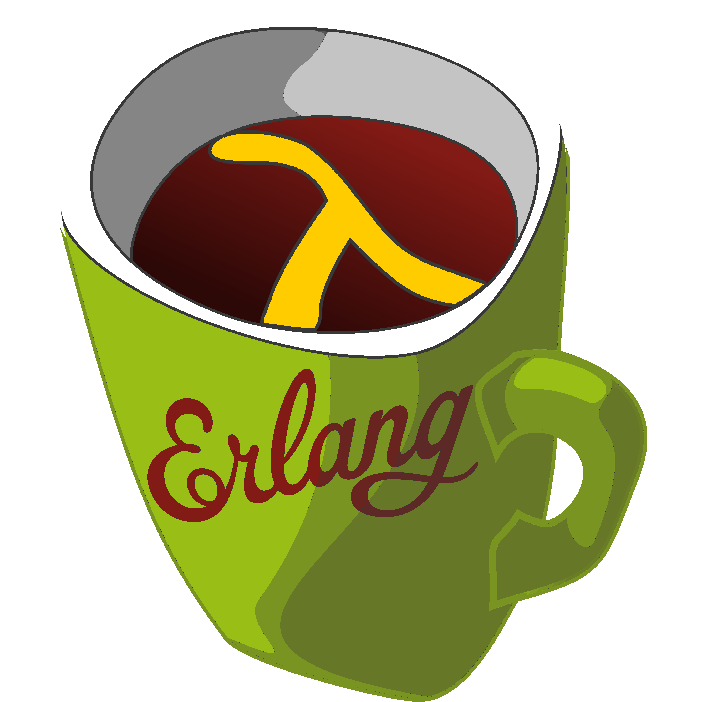
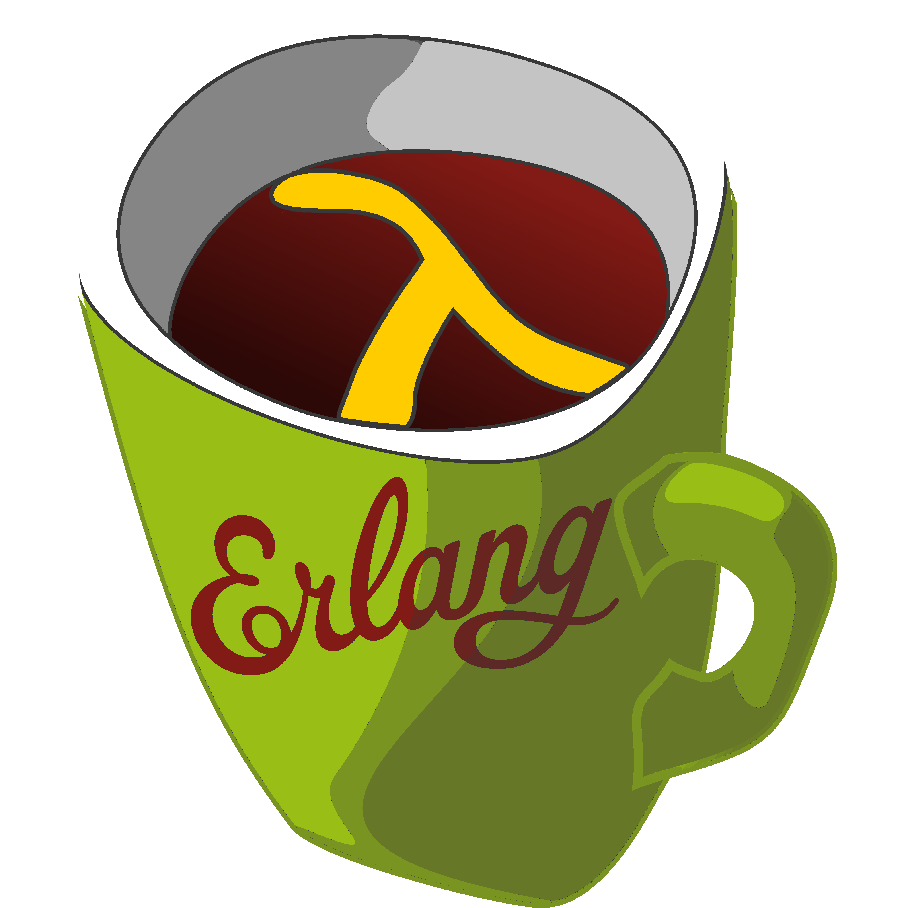

Nie ważne, czy jesteś starym wyjadaczem i programujesz w Erlangu od 20 lat, usłyszałeś coś ciekawego o Elixirze i chciałbyś dowiedzieć się czegoś więcej, czy jesteś kompletnie zielony. Jeśli chcesz poznać innych członków społeczności, podzielić się swoją wiedzą lub po prostu miło spędzić czas z osobami o podobnych zainteresowaniach - przyjdź do nas!
Jeśli chcesz poznać takie języki programowania jak Erlang, Elixir, LFE, chcesz dowiedzieć się jaki sekret napędza takie serwisy i aplikacje jak ejabberd, RabbitMQ, WhatsApp, ooVoo, Electric Imp - zapraszamy!
